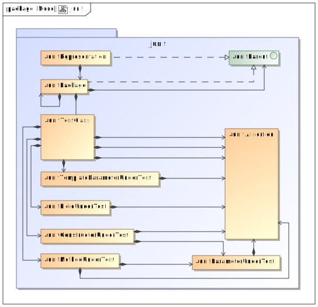

Uses of Package
junit
-
Packages that use junit Package Description junit Contains all model classes of the junit representation, used to fill the mustache template for test generation.
outputjunit outputjunit.converter outputjunit.converter.temporary outputjunit.files -
Classes in junit used by junit Class Description JunitAssertion Represents an junit assertion which will be printed in the mustache templateJunitConstructorUnderTest JunitFieldUnderTest JunitMethodUnderTest JunitPackage A package containing one or moreJunitTestClasses.JunitParameterUnderTest Represents a parameter of aJunitConstructorUnderTestorJunitMethodUnderTestwith its final modifier value.JunitParent Interface implemented by theJunitRepresentationandJunitPackage, provides a method the get itsJunitPackagesJunitTemplateParameterUnderTest JunitTestClass Represents a test class which will be converted in a mustache template -
Classes in junit used by outputjunit Class Description JunitRepresentation Represents the junit representation which is used to fill the mustache template -
Classes in junit used by outputjunit.converter Class Description JunitConstructorUnderTest JunitFieldUnderTest JunitMethodUnderTest JunitPackage A package containing one or moreJunitTestClasses.JunitParameterUnderTest Represents a parameter of aJunitConstructorUnderTestorJunitMethodUnderTestwith its final modifier value.JunitParent Interface implemented by theJunitRepresentationandJunitPackage, provides a method the get itsJunitPackagesJunitRepresentation Represents the junit representation which is used to fill the mustache templateJunitTemplateParameterUnderTest JunitTestClass Represents a test class which will be converted in a mustache template -
Classes in junit used by outputjunit.converter.temporary Class Description JunitPackage A package containing one or moreJunitTestClasses. -
Classes in junit used by outputjunit.files Class Description JunitParent Interface implemented by theJunitRepresentationandJunitPackage, provides a method the get itsJunitPackagesJunitRepresentation Represents the junit representation which is used to fill the mustache templateJunitTestClass Represents a test class which will be converted in a mustache template